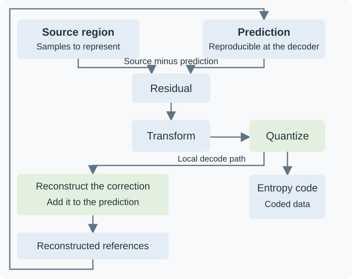

How Video Compression Works
A camera following a person across a plain wall records much of the same scene again and again. Storing every picture as a fresh list of sample values would spend a large amount of data describing that repetition. Video compression finds a cheaper description from which a decoder can reconstruct the pictures: where to get a useful prediction, how to correct it, and which small differences to retain.
That description is what Emby stores and delivers as a compressed video stream. The player reconstructs full pictures for display. To understand the savings—and why quality, encoding speed, and seeking behave as they do—it helps to follow one region through this process.
How much data is being replaced?
For a 1920 × 1080 picture stored as 8-bit 4:2:0 video, four picture locations use four luma samples and two chroma samples. Luma carries the brightness-related signal; the two chroma components carry color differences. The lower chroma sampling density gives an average of 1.5 bytes per picture location.
Ignoring padding and headers:
- One picture occupies 1920 × 1080 × 1.5 = 3,110,400 bytes.
- At 24 pictures per second, that is 74,649,600 bytes per second, about 74.65 MB/s or 597 Mb/s.
- One minute would occupy about 4.48 GB in decimal units.
A hypothetical compressed video stream averaging 6 Mb/s would use about 45 MB for that minute, before audio and container overhead. The raw-to-compressed ratio in this example is roughly 100:1. That calculation describes the data reduction, not a guarantee of what any particular source will look like at 6 Mb/s.
The raw baseline already has a defined sample format. Comparing it with full-resolution RGB or with samples of a different bit depth would give a different ratio. Compression operates on the picture representation supplied to the encoder; scaling, reducing bit depth, and changing chroma sampling are additional ways a workflow can change that input.
Find a prediction worth describing
The encoder divides a picture into regions and looks for useful ways to predict their samples. Region sizes and available prediction tools depend on the codec. A large region can describe a smooth wall efficiently. Around a moving hand or a detailed edge, smaller regions may provide better matches.
There is a cost to that flexibility. Dividing a region means describing the divisions and their individual choices. The smallest possible regions do not automatically make the smallest file. The encoder has to weigh improved predictions against the extra instructions.
Predict from the same picture
With intra-frame prediction, a region can be predicted from neighboring samples that have already been reconstructed. If nearby samples have similar values, extending those values into the new region can be a good starting point. A directional prediction can continue an edge across the region.
Both encoder and decoder know those reconstructed neighbors and the selected prediction rule. The encoder sends the choice of rule and a correction, rather than a completely independent value for every sample.
“Intra” therefore does not mean “uncompressed.” Even a picture that has no dependencies on other pictures can exploit a great deal of repetition within itself. A broad, evenly lit wall is much easier to describe this way than a field of unrelated random values.
Predict from other pictures
With inter-frame prediction, the encoder can obtain samples from reconstructed reference pictures. When the person moves to the right, a region at the person's new position may resemble a region farther left in a reference picture. A motion vector tells the decoder where to obtain the selected prediction.
The decoder does not need to recognize a person or understand the motion of an arm. It follows sample-location instructions. The encoder does the search; the decoder uses the result. Depending on the codec, predictions can use several reference pictures, interpolated sample positions, or combinations of predictions.
Motion prediction is especially useful when a camera pans across a scene. Many sample positions change, but large areas still resemble shifted versions of an earlier picture. Conversely, a small newly revealed strip behind a moving object may have no useful match. The encoder can choose another prediction or code that region using intra prediction.
The prediction is often imperfect: illumination changes, an edge moves by a fraction of a sample, or a surface deforms. The remaining difference is the residual. A useful prediction makes that correction easier to describe.
Follow the correction through an encode
Take four illustrative luma samples. The prediction is close to the source:
| Stage | Four sample values |
|---|---|
| Prediction | 100, 102, 104, 106 |
| Source | 102, 101, 108, 107 |
| Residual: source minus prediction | 2, −1, 4, 1 |
If the decoder receives that exact residual, adding it to the prediction recovers the source exactly. This subtraction is reversible. Lossy compression enters when the encoder chooses to describe an approximation of the correction.
Change the representation before rounding
A transform expresses a region as a mixture of patterns. One pattern might represent a constant offset; others describe variations across the region. The resulting numbers are coefficients: how much of each pattern is present.
A constant residual of 2, 2, 2, 2 illustrates the attraction. Instead of treating the four equal corrections as unrelated numbers, a suitable transform represents their common component and leaves the variation components at zero. Real picture regions often contain smooth areas and gradual changes that concentrate much of their information in relatively few coefficients.
For a transparent numerical example, use a small reversible add-and-subtract transform. This is a teaching example, not the transform prescribed by H.264 or H.265. Given residual samples a, b, c, and d, calculate:
c0 = (a + b + c + d) / 2
c1 = (a + b − c − d) / 2
c2 = (a − b + c − d) / 2
c3 = (a − b − c + d) / 2
For 2, −1, 4, 1, the coefficients are 3, −2, 3, 0. For the constant residual 2, 2, 2, 2, they would be 4, 0, 0, 0: all the correction is in the common component.
The transform has not thrown away information. Applying the corresponding inverse to the unrounded coefficients recovers the original residual. It has put the information into a form that is often cheaper to approximate and code.
Quantize the coefficients
Quantization reduces the number of coefficient values that need distinct representations. For this example, round to the nearest multiple of two, with halfway cases rounded away from zero:
| Coefficient values | |
|---|---|
| Before rounding | 3, −2, 3, 0 |
| After rounding | 4, −2, 4, 0 |
| Levels, expressed in units of the step size | 2, −1, 2, 0 |
A decoder given the levels and step size reconstructs 4, −2, 4, 0. It cannot determine whether an original coefficient of 3 or 4 led to the reconstructed value 4. Those distinctions have been merged.
Larger quantization steps merge more distinctions and often make more coefficients zero. That can reduce the number of bits substantially, while changing the reconstructed picture more. Actual codecs define their own scaling and quantization rules, and encoders can adjust choices across a picture. The simple step of two here is not a codec QP setting.
Code the remaining symbols compactly
The bitstream must describe more than coefficients. It also contains prediction choices, region divisions, reference information, motion data, and other syntax. Entropy coding represents those symbols using their statistical patterns.
For example, a long region of zero coefficients does not need a separate full-sized integer for every zero. Contexts in which one outcome is very likely can also be represented more economically than contexts with many equally likely outcomes. The exact method depends on the codec.
This stage preserves the symbols it is given. It does not decide that a coefficient should become zero; quantization and the encoder's coding decisions have already established what will be represented. A decoded coefficient sequence can be an exact copy of the coded sequence even while the resulting picture differs from the original.
Reconstruct the picture the player will get
Applying the inverse toy transform to the rounded coefficients produces a residual of 3, −1, 5, 1. Adding that correction to the same prediction gives:
| Four sample values | |
|---|---|
| Original source | 102, 101, 108, 107 |
| Decoded reconstruction | 103, 101, 109, 107 |
| Reconstruction minus source | 1, 0, 1, 0 |
Two sample values changed by one. The decoder has done its job correctly: this is the picture specified by the compressed description. It has no access to the discarded distinctions needed to restore the two original values.
The example also shows why a compression error need not look like a single missing pixel. Changing a transform coefficient changes a pattern spread over several samples. In real pictures, stronger approximation can soften texture, alter an edge, or produce visible patterns around it. Compression artifacts are the visible consequences of those decisions.

The encoder keeps a local reconstruction so later predictions use pictures that the decoder can also obtain. The codec defines the actual transforms, syntax, and reconstruction rules.
Why the encoder needs its own reconstruction
For later pictures, the encoder must predict using the samples the decoder will have. After the example above, a reference region contains 103, 101, 109, 107, even though the original source contained 102, 101, 108, 107.
Suppose the next source picture has a sample value of 104 at the corresponding position. Predicting from the reconstructed value 103 leaves a correction of 1. The decoder can make that same prediction and obtain 104. Predicting instead from the pristine source value 102 would leave a correction of 2; adding it to the decoder's reference value 103 would produce 105.
That disagreement is why the encoder reconstructs its chosen approximation and uses the result for future references. Both sides must operate from matching information. A lossy reference does not inevitably make all following pictures worse: later corrections can account for differences, provided the encoder uses the correct reconstructed reference.
Reconstruction can also include codec-defined processing such as in-loop filtering. In block-based coding, this processing can reduce some discontinuities or adjust reconstructed samples. When those filtered pictures serve as references, the encoder must account for the same processing. A filter used only for display has a different role because it does not redefine the samples used for subsequent predictions.
Lossless video compression retains the information needed to recover the input samples exactly. It can still exploit prediction and statistical coding. It does not have to use this lossy transform-and-rounding path; FFV1, for example, codes sample differences without discarding them. Lossless applies to the samples supplied to that encoder. Any earlier scaling or color conversion remains part of how those samples were produced.
Picture dependencies explain decoding order and seeking
A reference picture must be reconstructed before a picture that uses it. The order in which pictures are decoded can therefore differ from the order in which they appear on screen.
Consider a simplified sequence displayed as A, B, C. Suppose C is predicted from A, and B is predicted using both A and C. The decoder needs this order:
- Decode A.
- Decode C using A.
- Decode B using the two available references.
- Present A, B, C at their intended times.
The player holds the necessary pictures and uses their timing information to restore presentation order. “A later picture” in a prediction description can mean later in display order; it is already available when the dependent picture is decoded.
The same dependencies matter when seeking. Jumping directly into a dependent picture may omit references needed to reconstruct it. A player typically starts at a suitable random-access point, then decodes the necessary path to the requested time. Merely having a picture coded without inter prediction does not, for every codec structure, guarantee that all subsequent dependencies have been reset.
More frequent independent access points can make entry into the stream easier, but give the encoder fewer opportunities to reuse earlier pictures. This is one reason a seek-friendly or low-latency stream can have different compression characteristics from a stream designed mainly for efficient sequential playback.
The encoder chooses between competing descriptions
For one region, an encoder may have several plausible descriptions: one large prediction, several smaller predictions, a different reference picture, or an intra prediction. Each produces a different residual and requires a different amount of syntax.
A prediction with the smallest raw residual is not necessarily the best final choice. It might require many extra motion instructions. Conversely, accepting a slightly less accurate prediction can be worthwhile if its coded description is much smaller.
Rate-distortion optimization expresses this tradeoff. “Rate” is the number of bits needed; “distortion” is a measure of the reconstructed picture's difference from the source. As a constructed example, consider two complete coding choices:
| Choice | Bits for this region | Distortion in illustrative units |
|---|---|---|
| A | 120 | 10 |
| B | 70 | 14 |
If the cost is distortion + 0.05 × bits, A costs 16 and B costs 17.5, so A wins. If bits are more expensive and the multiplier is 0.2, A costs 34 and B costs 28, so B wins. Nothing about the source changed; the available tradeoff changed.
Real encoders use more involved calculations, and a simple sample-error score does not capture every aspect of perceived quality. The example explains why a coding decision can change when a bitrate budget changes. The x265 analysis options expose controls for how thoroughly such alternatives are evaluated.
Scene complexity affects those alternatives. A static wall offers predictable samples and often small corrections. Film grain and sensor noise contain variations that are harder to predict. Leaves moving independently, splashing water, or newly revealed detail can require many corrections. Preserving that information costs bits; smoothing it makes the picture cheaper to describe.
Rate control manages these choices over time. A quality-oriented encode can allow difficult sections to use more data. A constrained stream has to fit its delivery budget, potentially using stronger approximation in a difficult scene. A full movie's average bitrate hides those local differences. Resolution and frame rate describe the output grid and timing, while the coding decisions determine how faithfully that grid represents the source.
Encoding effort and playback effort are different
The decoder follows a selected description. The encoder may have tried many descriptions before choosing it. That search is why increasing encoder effort can improve compression without requiring the player to repeat the search.
The x265 presets provide a concrete example: slower presets evaluate more possibilities, while faster presets take more shortcuts. Comparing encoders fairly means considering the resulting quality, bitrate, and time together. Identical codec names or nominal quality settings do not establish identical decisions.
Playback still has work to do: entropy decoding, reference management, prediction, reconstruction, and any required filters. A device must support the particular codec features and sample format, and perform those operations fast enough for the picture rate. A compact stream can consequently be harder for a device to decode than a larger stream in a simpler supported format.
For Emby, these distinctions separate three common paths. During Direct Play, the app decodes the stored compressed video. When the server copies that video into a different container, the compressed picture description remains intact. During a video transcode, the server decodes the source, performs any required processing, and creates a new compressed description for the destination.
The new encoder sees the reconstructed source, including any texture or edge changes already present in it. More output bits can preserve that input better; they cannot identify discarded original detail. That is why keeping the original library file gives future playback and conversion paths the best available starting point.
See Also
- Lossy Video Compression
- Lossless Video Compression
- Inter-Frame Video Prediction
- Containers and Codecs